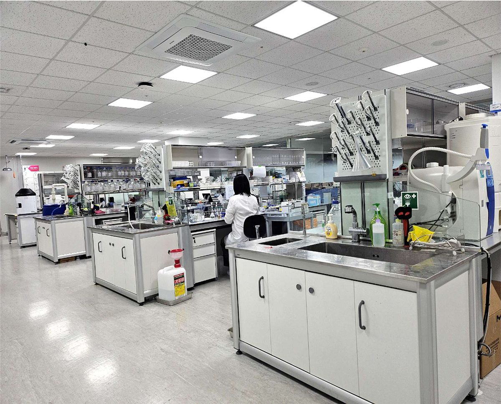

반려동물 건강을 위해 과학적으로 선별된 기능성 마이크로바이옴 균주.
표적 적응증을 위한 고도화된 마이크로바이옴 분석 및 검증 플랫폼.
신장, 면역, 장 건강, 스트레스, 대사 영역으로 확장되는 적응증.
독자 연구로 개발된 반려동물 신장 건강 특화 마이크로바이옴 균주. 만성 신장 질환(CKD)의 진행을 늦추고, 체내 요독 물질을 줄이며, 장-신장 축(Gut-Kidney Axis)을 통해 신장 건강을 회복합니다.
생성 단계에서 막고, 체내에서 제거하고, 마지막으로 배출까지.
장내 유해균을 직접 억제해 요독 물질이 만들어지는 단계를 차단합니다.
이미 생성된 요독 물질(인독실황산)을 체내에서 제거합니다. 특허 균주 능력.
고인산혈증을 예방해 신장 부담을 줄이고 삶의 질을 개선합니다.

자연 유래 · Non-GMO · 유전적·생리화학적 검증을 거친 활용 가능한 균종.
의약품 수준 안전성 확보 · 유전적 독성 유전자 없음 · 제3 전문기관 검증.
신기능 지표 효능 확인 · 요독 분해 기능성 확인 · 한국·미국·중국 특허 등록.
만성 신부전증 모델에서 효능 확인 · 국제 학술지 결과 보고 완료.
국내 마이크로바이옴 전문 기관을 통한 8개 항목 안전성 검증 완료.
만성 신장 질환 (CKD) · 신장 기능 보조 · 요독 물질 제거
아토피 · 알러지 · 만성 가려움 · 장-피부 축 기반 면역 균형
분리불안 · 행동 안정 · 장-뇌 축(Gut-Brain Axis) 기반 케어
Tailored Bio는 동물병원·수의 브랜드, 원료 기업, 글로벌 디스트리뷰터와 협력하여 미래형 반려동물 마이크로바이옴 솔루션을 함께 만듭니다.
파트너 되기